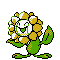

#192 SUNFLORA

TYPE:
PLANT
Pokédex Description
Pokémon Gold / Silver:
Converts sunlight into energy. In the darkness, after sunset, it closes its petals and remains motionless.
Pokémon Crystal:
As summer approaches, it acquires a more vivid and intense color on the petals of the face.
Base Stats
| Health | Attack | Defense | Speed | At. Esp. | Def. Esp. |
|---|---|---|---|---|---|
| 75 | 75 | 55 | 30 | 105 | 85 |
Max Stats Level 50
| Health | Attack | Defense | Speed | At. Esp. | Def. Esp. |
|---|---|---|---|---|---|
| 135 - 181 | 80 - 126 | 60 - 106 | 35 - 81 | 110 - 156 | 90 - 136 |
Max Stats Level 100
| Health | Attack | Defense | Speed | At. Esp. | Def. Esp. |
|---|---|---|---|---|---|
| 260 - 353 | 155 - 248 | 115 - 208 | 65 - 158 | 215 - 308 | 175 - 268 |
Movements by Level
Level - Gold/Silver Crystal - Attack - Type - Power - Precision - PP - Description
1 - 1 - ABSORB PLANT - 20 - 100 - 20 - Remove half the damage.
1 - 1 - NORMAL DESTROYER - 40 - 100 - 35 - Hit with the legs or tail.
4 - 4 - NORMAL DEVELOPMENT - 0 - 100 - 40 - Greater possibility of AT. ESP.
10 - 10 - SHARP BLADE PLANT - 55 - 95 - 25 - High critical hit chance.
19 - 19 - SUNNY DAY FIRE - 0 - 90 - 5 - Improved fire attacks 5 turns.
31 - 31 - PETAL DANCE PLANT - 70 - 100 - 20 - It lasts 2-3 turns and confuses you.
46 - 46 - SOLAR BEAM PLANT - 120 - 100 - 10 - 1st turn: Prepare 2nd turn: Attack.
1 - 1 - NORMAL DESTROYER - 40 - 100 - 35 - Hit with the legs or tail.
4 - 4 - NORMAL DEVELOPMENT - 0 - 100 - 40 - Greater possibility of AT. ESP.
10 - 10 - SHARP BLADE PLANT - 55 - 95 - 25 - High critical hit chance.
19 - 19 - SUNNY DAY FIRE - 0 - 90 - 5 - Improved fire attacks 5 turns.
31 - 31 - PETAL DANCE PLANT - 70 - 100 - 20 - It lasts 2-3 turns and confuses you.
46 - 46 - SOLAR BEAM PLANT - 120 - 100 - 10 - 1st turn: Prepare 2nd turn: Attack.
Movements by MT/MO
MT/MO - Attack - Type - Power - Accuracy - PP - Description
MT03 - DAMN??? - 0 - 100 - 10 - It doesn't work the same with ghosts.
MT06 - TOXIC POISON - 0 - 85 - 10 - Poison that increases the damage.
MT10 - NORMAL HIDDEN POWER - varies - 100 - 15 - The power varies depending on the POKÉMON.
MT11 - SUNNY DAY FIRE - 0 - 90 - 5 - Improved fire attacks 5 turns.
MT12 - SWEET NORMAL AROMA - 0 - 100 - 20 - Reduces enemy evasion.
MT13 - NORMAL SNORING - 40 - 100 - 15 - It is only used when you sleep.
MT15 - HYPER BEAM NORMAL - 150 - 90 - 5 - 1st turn: Attack 2nd turn: Rest.
MT17 - NORMAL PROTECTION - 0 - 100 - 10 - Thwart the attack. It can fail.
MT19 - GIGA-PLANT DRAIN - 60 - 100 - 5 - Remove half the damage.
MT20 - NORMAL Stamina - 0 - 100 - 10 - Always leave 1 PS, at least.
MT21 - NORMAL FRUSTRATION - varies - 100 - 20 - Based on the lack of loyalty.
MT22 - SOLAR RAY PLANT - 120 - 100 - 10 - 1st turn: Prepare 2nd turn: Attack.
MT27 - NORMAL REVERSE - varies - 100 - 20 - Attack based on loyalty.
MT32 - DOUBLE NORMAL TEAM - 0 - 100 - 15 - Improves evasion skill.
MT34 - NORMAL WIG - 0 - 90 - 15 - Causes confusion and raises ATTACK.
MT35 - NORMAL SLEEPWALKER - 0 - 100 - 10 - Attack randomly while you sleep.
MT36 - POISON SLUDGE PUMP - 90 - 100 - 10 - It can poison the enemy.
MT44 - PSYCHIC REST - 0 - 100 - 10 - Sleep 2 shifts for full cure.
MT45 - NORMAL ATTRACTION - 0 - 100 - 15 - Fall in love with the opposite gender.
MO01 - NORMAL CUT - 50 - 95 - 30 - Cuts with claws, scythes, etc.
MO05 - NORMAL FLASH - 70 - 20 - Blinds the enemy and let down the precision.
MT06 - TOXIC POISON - 0 - 85 - 10 - Poison that increases the damage.
MT10 - NORMAL HIDDEN POWER - varies - 100 - 15 - The power varies depending on the POKÉMON.
MT11 - SUNNY DAY FIRE - 0 - 90 - 5 - Improved fire attacks 5 turns.
MT12 - SWEET NORMAL AROMA - 0 - 100 - 20 - Reduces enemy evasion.
MT13 - NORMAL SNORING - 40 - 100 - 15 - It is only used when you sleep.
MT15 - HYPER BEAM NORMAL - 150 - 90 - 5 - 1st turn: Attack 2nd turn: Rest.
MT17 - NORMAL PROTECTION - 0 - 100 - 10 - Thwart the attack. It can fail.
MT19 - GIGA-PLANT DRAIN - 60 - 100 - 5 - Remove half the damage.
MT20 - NORMAL Stamina - 0 - 100 - 10 - Always leave 1 PS, at least.
MT21 - NORMAL FRUSTRATION - varies - 100 - 20 - Based on the lack of loyalty.
MT22 - SOLAR RAY PLANT - 120 - 100 - 10 - 1st turn: Prepare 2nd turn: Attack.
MT27 - NORMAL REVERSE - varies - 100 - 20 - Attack based on loyalty.
MT32 - DOUBLE NORMAL TEAM - 0 - 100 - 15 - Improves evasion skill.
MT34 - NORMAL WIG - 0 - 90 - 15 - Causes confusion and raises ATTACK.
MT35 - NORMAL SLEEPWALKER - 0 - 100 - 10 - Attack randomly while you sleep.
MT36 - POISON SLUDGE PUMP - 90 - 100 - 10 - It can poison the enemy.
MT44 - PSYCHIC REST - 0 - 100 - 10 - Sleep 2 shifts for full cure.
MT45 - NORMAL ATTRACTION - 0 - 100 - 15 - Fall in love with the opposite gender.
MO01 - NORMAL CUT - 50 - 95 - 30 - Cuts with claws, scythes, etc.
MO05 - NORMAL FLASH - 70 - 20 - Blinds the enemy and let down the precision.
Pokédex Gold/Silver/Crystal By Professor Dog.